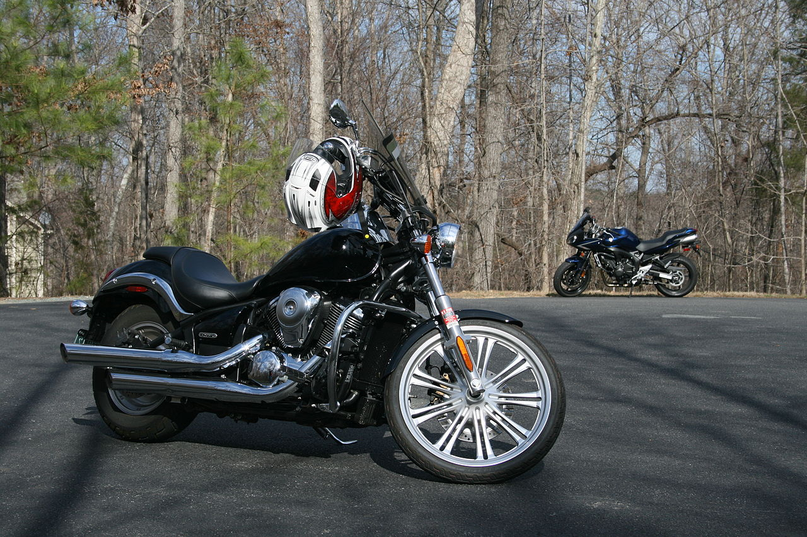
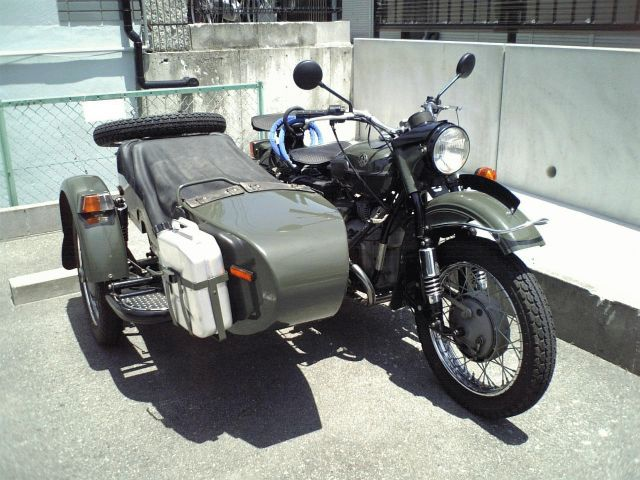

A motorcycle, often called a bike, motorbike, or cycle, is a two- or three-wheeled motor vehicle. Motorcycle design varies greatly
to suit a range of different purposes: long distance travel, commuting, cruising, sport including racing, and off-road riding.
Motorcycling is riding a motorcycle and related social activity such as joining a motorcycle club and attending motorcycle rallies.
In 1894, Hildebrand & Wolfmüller became the first series production motorcycle, and the first to be called a motorcycle. In 2014,
the three top motorcycle producers globally by volume were Honda, Yamaha (both from Japan), and Hero MotoCorp (India).
In developing countries, motorcycles are considered utilitarian due to lower prices and greater fuel economy. Of all the motorcycles in
the world, 58% are in the Asia-Pacific and Southern and Eastern Asia regions, excluding car-centric Japan.
According to the US Department of Transportation the number of fatalities per vehicle mile traveled was 37 times higher for
motorcycles than for cars.
The term motorcycle has different legal definitions depending on jurisdiction (see #Legal definitions and restrictions). There are three major types of motorcycle: street, off-road, and dual purpose. Within these types, there are many sub-types of motorcycles for different purposes. There is often a racing counterpart to each type, such as road racing and street bikes, or motocross and dirt bikes. Street bikes include cruisers, sportbikes, scooters and mopeds, and many other types. Off-road motorcycles include many types designed for dirt-oriented racing classes such as motocross and are not street legal in most areas. Dual purpose machines like the dual-sport style are made to go off-road but include features to make them legal and comfortable on the street as well. Each configuration offers either specialised advantage or broad capability, and each design creates a different riding posture. In some countries the use of pillions (rear seats) is restricted.
 
The first internal combustion, petroleum fueled motorcycle was the Daimler Reitwagen. It was designed and built by the German inventors
Gottlieb Daimler and Wilhelm Maybach in Bad Cannstatt, Germany in 1885.[4] This vehicle was unlike either the safety bicycles or the boneshaker
bicycles of the era in that it had zero degrees of steering axis angle and no fork offset, and thus did not use the principles of bicycle and
motorcycle dynamics developed nearly 70 years earlier. Instead, it relied on two outrigger wheels to remain upright while turning.
The inventors called their invention the Reitwagen ("riding car"). It was designed as an expedient testbed for their new engine, rather than
a true prototype vehicle.
The first commercial design for a self-propelled cycle was a three-wheel design called the Butler Petrol Cycle, conceived of Edward Butler
in England in 1884. He exhibited his plans for the vehicle at the Stanley Cycle Show in London in 1884. The vehicle was built by the Merryweather
Fire Engine company in Greenwich, in 1888.
The Butler Petrol Cycle was a three-wheeled vehicle, with the rear wheel directly driven by a 5⁄8 hp (0.47 kW), 40 cc (2.4 cu in) displacement,
2 1⁄4 in × 5 in (57 mm × 127 mm) bore × stroke, flat twin four-stroke engine (with magneto ignition replaced by coil and battery) equipped with
rotary valves and a float-fed carburettor (five years before Maybach) and Ackermann steering, all of which were state of the art at the time.
Starting was by compressed air. The engine was liquid-cooled, with a radiator over the rear driving wheel. Speed was controlled by means of a
throttle valve lever. No braking system was fitted; the vehicle was stopped by raising and lowering the rear driving wheel using a foot-operated
lever; the weight of the machine was then borne by two small castor wheels. The driver was seated between the front wheels. It wasn't, however, a
success, as Butler failed to find sufficient financial backing.
Many authorities have excluded steam powered, electric motorcycles or diesel-powered two-wheelers from the definition of a 'motorcycle',
and credit the Daimler Reitwagen as the world's first motorcycle. Given the rapid rise in use of electric motorcycles worldwide,
defining only internal-combustion powered two-wheelers as 'motorcycles' is increasingly problematic.
If a two-wheeled vehicle with steam propulsion is considered a motorcycle, then the first motorcycles built seem to be the French Michaux-Perreaux
steam velocipede which patent application was filled in December 1868, constructed around the same time as the American Roper steam velocipede,
built by Sylvester H. Roper Roxbury, Massachusetts. who demonstrated his machine at fairs and circuses in the eastern U.S. in 1867, Roper built
about 10 steam cars and cycles from the 1860s until his death in 1896.